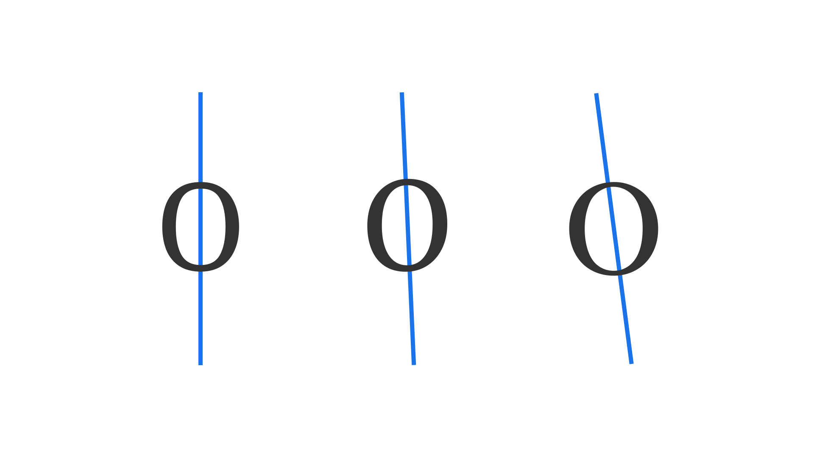

Axis (in type design)
By Google Fonts Knowledge contributors · Google Fonts Knowledge.
Original article · Source on GitHub · CC BY-SA 4.0. Text, illustrations and existing credits reproduced from the licensed Knowledge repository. Open Shelf adapted the layout and links; these adaptations are also CC BY-SA 4.0. No endorsement implied.
In type design, the axis usually refers to the direction of the stroke in a letterform, often taking inspiration from (or making direct reference to) how letterforms might appear if drawn with a pen. Letterforms with slanted axes are informed by writing with a broad-nibbed pen (translation), while letterforms with vertical axes are informed by writing with a pointed pen (expansion). This is the basis of Gerrit Noordzij’s theory and eponymous cube.

It’s possible to infer the axis (or axes) in a typeface’s design by the contrast of the thick and thin parts of a stroke; therefore, low-contrast typefaces (i.e., most sans serifs) don’t necessarily have a visible axis.